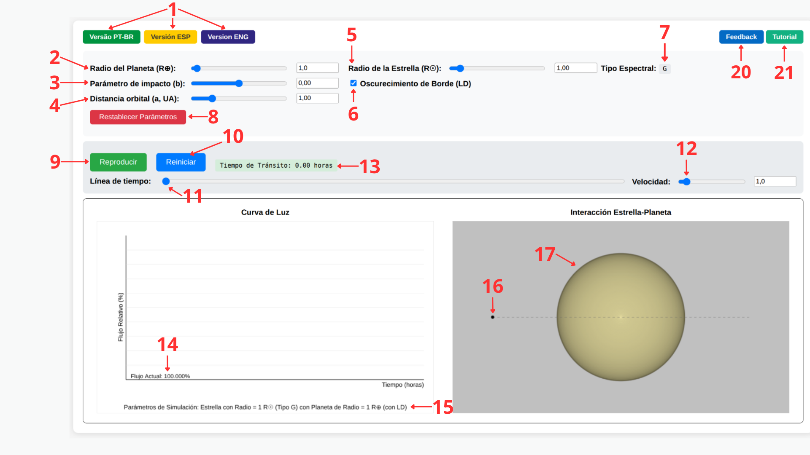
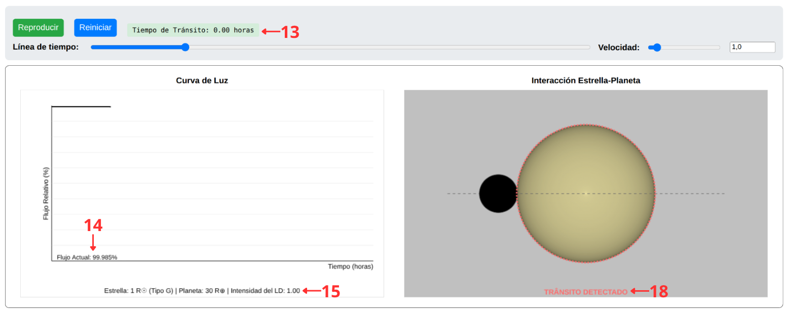
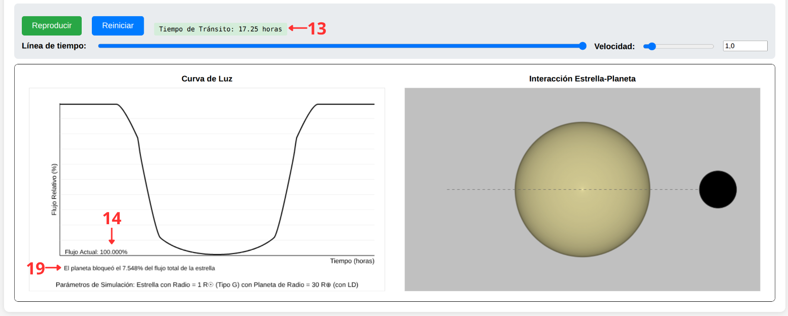

Esta guía explica el funcionamiento de cada control del simulador, la física detrás de los cálculos realizados en tiempo real, y sugiere actividades para su uso en el aula. Para acceder a la herramienta, vuelve al simulador.
El tránsito planetario es el método más productivo en la detección de exoplanetas, siendo responsable de aproximadamente el 75% de los descubrimientos confirmados. Se basa en la observación de la disminución periódica del brillo de una estrella causada por el paso de un planeta frente a su disco.
La interpretación precisa de esta curva de luz requiere tener en cuenta el oscurecimiento de limbo (limb darkening): los bordes del disco estelar emiten menos luz que el centro, debido a la estructura térmica de la fotosfera. Este efecto redondea las fases de ingreso y egreso del tránsito y es esencial para la determinación correcta del radio planetario, lejos de ser un mero ruido que deba descartarse.
Este simulador permite manipular, en tiempo real, los parámetros físicos y orbitales de un sistema exoplanetario y observar de inmediato sus efectos sobre la curva de luz, sincronizando la representación geométrica del tránsito con el gráfico de flujo generado.
La interfaz está dividida en un panel de parámetros físicos y una región doble de visualización, con cada elemento numerado en la figura siguiente. Las tablas a continuación describen cada uno de esos números en detalle.

| Control | Descripción |
|---|---|
| Radio del Planeta (R⊕) (2) | Define el radio del planeta en unidades de radios terrestres, de 0,2 a 30 R⊕. Cuanto mayor sea el planeta en relación con la estrella, más profundo será el tránsito. |
| Radio de la Estrella (R☉) (5) | Define el radio de la estrella anfitriona en unidades de radios solares, de 0,2 a 10 R☉. Al modificarse este valor, el simulador actualiza automáticamente el Tipo Espectral (7) mostrado, según la Clasificación Espectral de Harvard (O, B, A, F, G, K, M), junto con la masa estimada y los coeficientes de oscurecimiento de limbo. |
| Parámetro de Impacto (b) (3) | Controla la distancia proyectada entre el centro del planeta y el centro de la estrella durante el tránsito, variando de −0,99 a 0,99. Los valores cercanos a cero representan tránsitos centrales; los valores cercanos a ±1 representan tránsitos rasantes, próximos al borde del disco estelar. |
| Distancia orbital (a, UA) (4) | Define el semieje orbital del planeta en unidades astronómicas. Este valor, junto con la masa estelar estimada, determina el período orbital mediante la Tercera Ley de Kepler y, en consecuencia, la duración del tránsito. |
| Oscurecimiento de Limbo (LD) (6) | Activa o desactiva el efecto de oscurecimiento de limbo en el cálculo de la curva de luz y en la renderización visual de la estrella. Compara ambas condiciones para visualizar cómo el efecto redondea las fases de ingreso y egreso. |
| Restablecer Parámetros (8) | Restaura todos los controles a los valores de referencia de un sistema Tierra–Sol (R⊕ = 1, R☉ = 1, b = 0, a = 1 UA). |
En la parte superior de la interfaz, los botones (1) permiten alternar instantáneamente el idioma del simulador entre Portugués, Español e Inglés.
| Control | Descripción |
|---|---|
| Inicio / Detener (9) | Inicia o pausa la animación del tránsito en tiempo real. |
| Reiniciar (10) | Reinicia la animación desde el primer cuadro, sin modificar los parámetros físicos. |
| Tiempo de Tránsito (13) | Muestra el tiempo transcurrido desde el inicio del tránsito (primer contacto) hasta el instante actual, calculado a partir de la duración total T₁₄ derivada de la física orbital del sistema. |
| Línea de tiempo (11) | Permite arrastrar manualmente la posición de la animación (scrubbing), deteniéndose en cualquier instante —por ejemplo, exactamente en el momento del primer contacto— independientemente del estado de reproducción. |
| Velocidad (12) | Controla la velocidad de reproducción de la animación. Hacia la izquierda, más rápida; hacia la derecha, más lenta. |
El panel izquierdo dibuja la curva de luz en tiempo real, mostrando el flujo relativo (%) en función del tiempo (horas), el flujo actual instantáneo (14) y, al finalizar la animación, un resumen de los parámetros de la simulación (15). El panel derecho muestra la interacción entre estrella y planeta, con el planeta (16) orbitando la estrella anfitriona (17) a lo largo de una trayectoria representada por una línea punteada.
En cuanto el planeta toca el borde del disco estelar, el simulador muestra una alerta visual de "TRÁNSITO DETECTADO" (18), señalando el inicio de la caída de flujo:

Al finalizar la animación, con el planeta en egreso, el panel de la curva de luz muestra un informe con el porcentaje exacto de flujo bloqueado por el tránsito (19):

El núcleo del simulador calcula la fracción de flujo estelar bloqueado por el planeta en cada
instante, a partir de la distancia proyectada z entre los centros de los dos discos
(normalizada por el radio estelar) y la razón de los radios
p = Rp/R★. El algoritmo distingue tres regímenes geométricos:
Cuando el LD está activado, la profundidad geométrica del tránsito se pondera por la intensidad local de la superficie estelar, descrita por la ley cuadrática de Claret (2000):
donde μ es la coordenada radial normalizada en la superficie estelar, y u₁,
u₂ son coeficientes que dependen del tipo espectral de la estrella. Las estrellas más
frías (tipos K y M) presentan coeficientes mayores, lo que indica un oscurecimiento de limbo más
pronunciado, en comparación con las estrellas más calientes (tipos O y B).
La escala temporal de la animación no es arbitraria: el simulador deriva el período orbital
P a partir de la Tercera Ley de Kepler,
donde la masa estelar M★ se estima a partir del valor medio del intervalo de masa
asociado a la clase espectral identificada según el radio informado. A partir de P y de
la inclinación orbital derivada del parámetro de impacto, se calcula la duración total del tránsito
(T₁₄), que se muestra dinámicamente durante la animación.
Configura un sistema con R☉ = 1, R⊕ = 5 y b = 0. Ejecuta la animación con el LD activado y luego desactivado. Pide a los estudiantes que describan la diferencia en la forma de la curva de luz, especialmente en las fases de ingreso y egreso.
Manteniendo fijo el radio del planeta, cambia el radio estelar para obtener una estrella de tipo G (≈1 R☉) y, luego, una estrella de tipo M (≈0,3 R☉). Compara la profundidad del tránsito y la curvatura de la base de la curva de luz en ambos casos.
Con los mismos parámetros de radio, varía el parámetro de impacto de 0 a casi 1. Observa cómo la forma de la curva de luz cambia de un perfil simétrico y profundo a uno asimétrico y poco profundo, hasta dejar de detectarse el tránsito.
Manteniendo fijos los demás parámetros, compara la duración del tránsito (T₁₄) para a = 0,1 UA y a = 1,0 UA. Relaciona la diferencia observada con la Tercera Ley de Kepler.
Esta es una herramienta de carácter exploratorio y conceptual, no destinada al análisis observacional cuantitativo. La versión actual no incorpora:
La fundamentación física completa, el algoritmo de ocultación y la discusión didáctica de este simulador están descritos en el artículo publicado en la Revista Brasileira de Ensino de Física. El código fuente está disponible en el repositorio de GitHub.